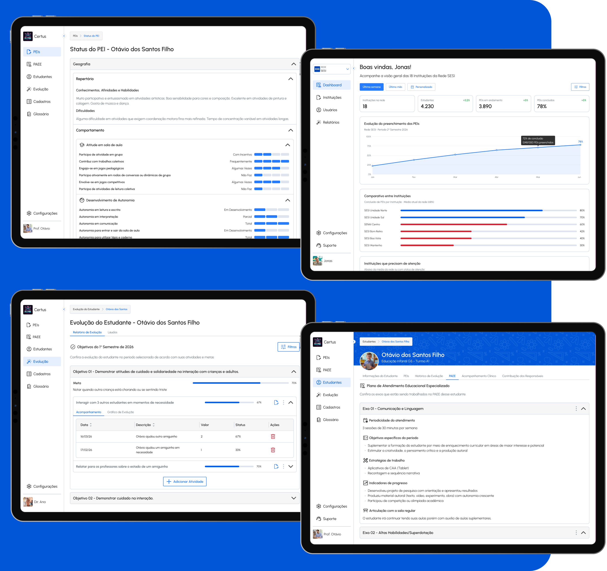

Case Study
Every Brazilian inclusion student has a legal right to an individualized education plan. Almost no school has the tools to produce one. I co-founded PixelPunk and designed IncludED with a neuropsychologist, a pedagogical consultant, and two developers. Six months after launch, it runs in 25 schools with 1,000+ students registered.
Background
The Legal Mandate
Any student with a disability, global developmental disorder, or high intellectual ability has a legal right to a PEI, an Individualized Educational Plan: pedagogical goals, curricular adaptations, and a record of progress over time. More than 1.7 million students in Brazilian basic education hold that right today. The law is unambiguous.
The practice is Word files, spreadsheets, and paper notebooks, each teacher with their own format and their own drawer. No shared structure, no collaboration between teachers, no traceability for the school.
The Human Cost
The teacher absorbs the friction. A compliant PEI, aligned to BNCC and reviewed with specialists, takes hours per student, multiplied by every inclusion student in the class. Under that load, many PEIs end up satisfying the form and losing the function: a paper trail with no pedagogical depth.
IncludED exists to give teachers the structure to produce a meaningful PEI in a fraction of the time.
The problem isn't the law. The problem is that nobody gave teachers the infrastructure to follow it.
The origin
Neuroscience has shaped how I design for years: cognitive load, attention, the way working memory limits map onto interface decisions. So when we founded PixelPunk in October 2024 and had to choose a first product, a platform for inclusion students was not a random pick. It sits exactly where educational neuroscience, pedagogy, and design meet.
It also carries weight. Behind every PEI created in the platform there is a child whose legal right to support depends on that document being real. We built with that in mind.
The process
Before the first product screen, we built Accio, PixelPunk's design system: components that are accessible by default, documented in Storybook. With two developers and an audience of educators, we couldn't afford per-screen accessibility fixes. The documented components also made AI-assisted development faster: every screen after that was born quicker and consistent.
We spent weeks studying the domain with two specialists who have 20+ years inside schools: inclusion legislation, BNCC architecture across every educational stage, how teachers build PEIs today, how clinical reports reach classrooms, and what AEE regulation requires from support professionals.
We audited school ERPs, Word templates, spreadsheet PEI builders, and edtech platforms. The category was built for school administration, not inclusion: no BNCC-aligned goal writing, no AEE workflow, no clinical-to-pedagogical translation. The audit defined the exact requirements IncludED had to meet to be useful instead of abandoned.
With the design system and the domain knowledge in place, screen production moved fast. The developers, the consultant, and the neuropsychologist reviewed prototypes, flagged terminology, and validated flows against real classroom routines. The MVP was tested in a São Paulo school with 45 users and around 60 students before wider rollout.
The research

↑ Every session produced an artifact: a documented decision, a product rule, a terminology choice
Pedagogical consultant
She defined the split between PEI and PAEE, goal structure by BNCC stage, and behavioral records kept apart from pedagogical objectives. Merging what must stay separated would have made the product non-compliant.
Neuropsychologist
Clinical reports arrive in language most teachers cannot act on. She defined how IncludED translates them, preserving diagnostic accuracy while reformulating content into pedagogical guidance. The Adaptation Council is her direct contribution.
Market audit
School platforms in Brazil were built for administration. None had BNCC-aligned PEI workflows, AI-assisted goal writing, or multi-role collaboration. The space IncludED occupies was empty.

The platform
PEI Creation and Management
The core of the platform. Administrators open a school period and the system generates one PEI per active student. Creation runs as a four-step wizard (student information, repertoire, behavior, curricular adaptations), so the teacher never faces a blank page. Teachers contribute by discipline; coordinators see the whole. Every PEI exports as a single compliant PDF with all contributions, objectives, behaviors, and the PAEE.
BNCC Goal Mapping with AI
Teachers link objectives to BNCC descriptors, with the full glossary indexed for navigation and every component covered, including Religious Education and Computing. For each descriptor, AI drafts a goal in SMART format tailored to the student's profile. The teacher edits; the AI starts. Goal writing got faster and BNCC alignment got tighter at the same time.
Student Evolution and Progress Tracking
Objectives break into activities tracked quantitatively or qualitatively, each advance recorded with who registered it, when, and how much. The platform aggregates progress by objective, discipline, and period, and the record survives the school year: when classes or teachers change, the student's history carries over intact.
Clinical Report Processing
Administrators upload reports from neurologists, psychologists, and speech therapists. OCR handles scans; AI translates medical language into classroom guidance. Only accepted reports feed the Adaptation Council, a quality gate we designed with the neuropsychologist.
PAEE: Specialized Support Plan
A module exclusive to AEE professionals. The PAEE captures work axes (communication, cognition, autonomy, motor skills) with objectives, strategies, frequency, and session duration. AI suggests objectives and indicators per axis based on the student profile.
Multi-Role Collaboration
The coordinator sees everything, the math teacher sees their contribution, the AEE professional sees a fixed list of assigned students, independent of class. The rules are structural: administrator and AEE roles are mutually exclusive, and a teacher only reaches a student through two independent gates, discipline permission and enrollment. LGPD compliance was designed in from the start: documented legal basis, consent records, audit log, and retention rules.
AI in the product
AI in IncludED works as a teaching assistant, not a substitute for teacher judgment. Every integration has one job, a defined output, and a human review gate, and generated content stays grounded in the school's own material.
Clinical
Report Translation and OCR
Medical language from clinical reports is rewritten in pedagogical terms teachers can act on. OCR handles scanned documents. The teacher reads, edits, and accepts before the content affects any student guidance.
Planning
Goal and Activity Suggestions
When a teacher selects a BNCC descriptor, AI drafts a goal text. When defining an activity, AI suggests a description based on the objective and student profile. The teacher always edits and confirms before anything is saved.
Synthesis
Adaptation Council and PEI Summary
Accepted reports are consolidated by AI into an Adaptation Council: practical classroom guidance for all of a student's teachers. AI also generates a full PEI text summary on demand for coordinator review and PDF export.
The pilot

The test
A São Paulo school, 45 users, around 60 students, and the full PEI flow under real use. Watching it told us which parts needed rework and surfaced a problem we had not framed yet.
What we found
Two things surfaced. First, flow: many teachers cover more than one subject, so the same student appears across several of their contributions and they were retyping the same behavioural observations every time. Letting a new contribution carry over what was already filled in for that student cut the repetition and showed us which other flows could be shortened, giving time back for what matters, writing the PEI and defining objectives.
Second, retention. The PEI is meant to be a living document, but the real pattern was different: the teacher spends the effort creating it, then only consults it, edits something small, or passes it on. That routine does not require frequent access, and schools were using the platform for a season rather than continuously. The problem was not the document. It was that nothing happened after it.
The response
Each objective now breaks into activities with dates, targets and a status, so progress stops being a memory and becomes a record: who registered what, when, and how much moved. Charts and a timeline turn that record into a reading of the student across the school period, which is exactly what the coordinator needs for meetings and the teacher needs to decide the next step.
That changed the reason to come back. The platform stopped being the place where the PEI is written and became the place where the student is followed, week by week. Managing PEIs turned into the starting point rather than the whole product, and school use turned continuous.
Results
Takeaway
IncludED confirmed something I suspected: in a domain this dense, expert knowledge is the design material. Every hour with the specialists saved weeks of building the wrong thing.
More work

Multipedidos
Senior Product Designer at a food platform serving 4M+ orders a month. Design system, consumer product, and AI-assisted workflows.

Keepeye
KPI management platform for Dojo Smart Ways. Sole UX Engineer: designed the full product and built production components in Angular.

Electrolux
Dashboard visual identity and design system for global markets, via Dojo Smart Ways.